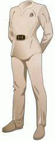
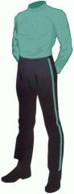
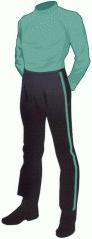
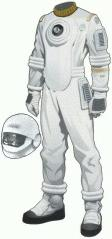
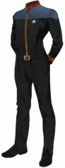
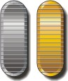

|
|
Uniformi dei film |
| Insegne di grado Sezioni Mostreggiature della Flotta Stellare Anzianità Note |
| Uniforme standard |
 |
| Uniforme standard con giacca da campo Il colore della sezione |
 |
| Uniforme degli Ammiragli |
  |
| Tuta spaziale con propulsore autonomo |
|
| Uniformi standard degli ufficiali |
    |
| Camice da infermeria | |
| Uniforme standard dei sottufficiali |
 |
| Tuta protettiva utilizzata in sala macchine |
 |
| Uniforme standard con giacca da campo |
 |
| Uniforme standard Colori, insegne di grado e mostreggiature sono quelli dell'uniforme di The Next Generation |
 |
| Uniforme standard Colori, insegne di grado e mostreggiature sono quelli dell'uniforme di The Next Generation |
  |
| Uniforme degli Ammiragli da Insurrection |
 |
| Alta uniforme degli Ufficiali Anziani da Insurrection |
 |
| Alta uniforme del Capitano da Insurrection |
 |
| Alta uniforme degli Ammiragli da Insurrection |
|
Le insegne di grado nelle uniformi del primo film sono riportare sia su ciascuna manica all'altezza del polso, sia sulla parte frontale sinistra dell'uniforme su una fettuccia di tessuto che indica la sezione; nell'uniforme da campo il grado è riportato sul braccio sinistro. Nei film dal secondo al sesto i gradi vengono indossati all'altezza della spalla destra sulla parte anteriore dell'uniforme e su una fascia sul polsino sinistro della giacca.
Nel primo film il colore delle uniformi corrisponde alle mansioni che svolge l'ufficiale a bordo: ufficiali comandanti -> azzurro, ufficiali di plancia -> beige, equipaggio -> ocra, sezione tecnica, scientifica e medica -> bianco. I dipartimenti sono identificati dal colore dello sfondo della mostreggiatura della Flotta Stellare:
| Comando |
| Tecnica |
| Scienza |
| Operazioni Timone Comunicazioni |
| Medico |
| Sicurezza |
Colori dei dipartimenti dal secondo al sesto film:
| Apprendista |
| Sicurezza |
| Tecnica |
| Comando |
| Servizi Speciali |
| Medico |
| Scienza |
Nel primo film si vede anche la mostreggiatura per le alte uniformi, che è la stessa dei sottufficiali dal secondo al sesto film.
| Ufficiali |
|
| Ufficiali | |
| Sottufficiali |
|
|
Da Generations |
|
|
|
|
Nella manica sinistra della divisa è anche indicata l'anzianità di servizio con questa codifica:
| Un anno | |
| Cinque anni |  |